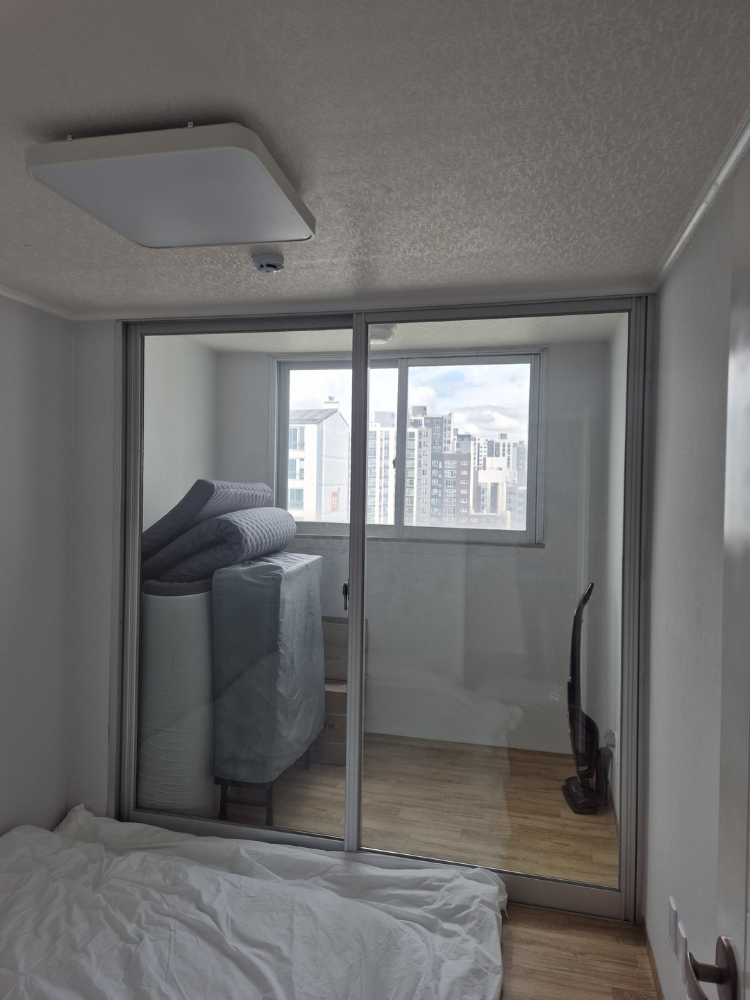
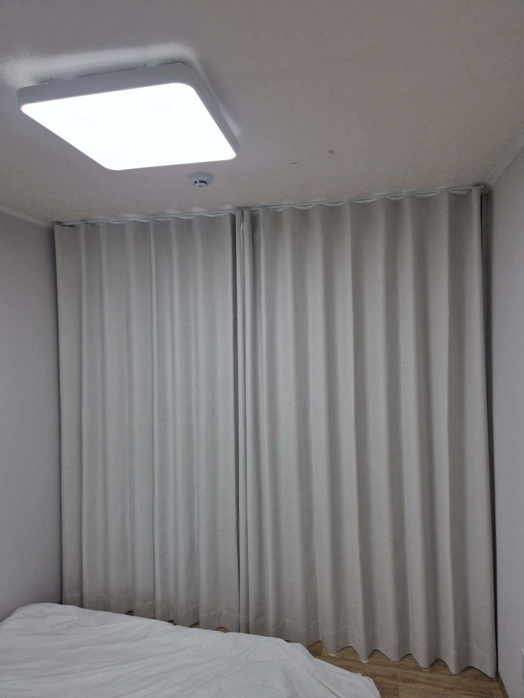
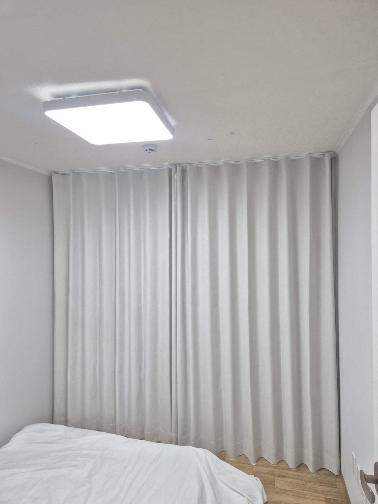
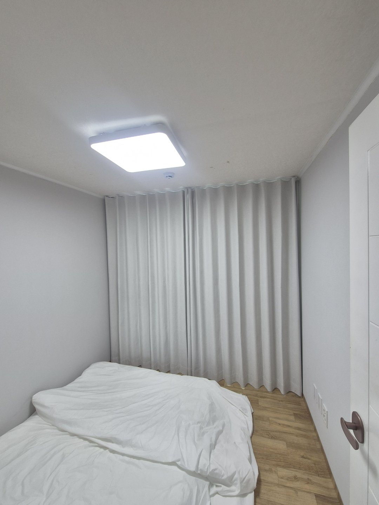
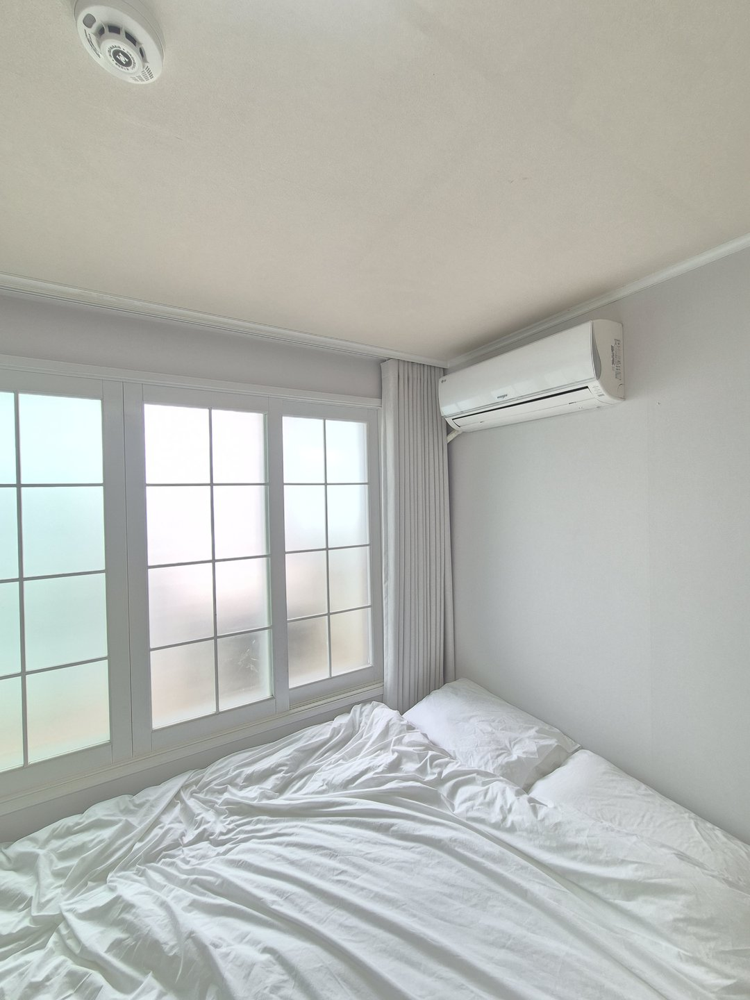
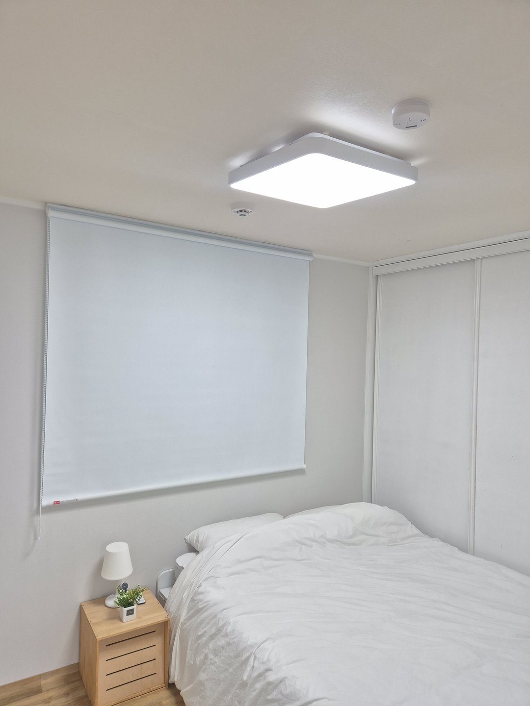
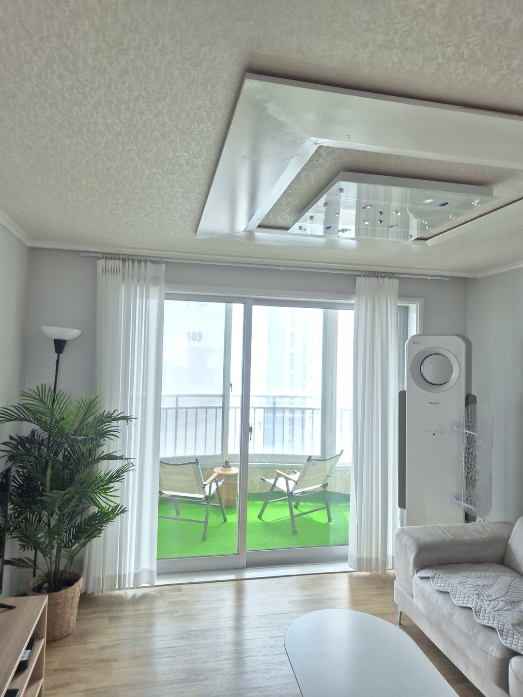
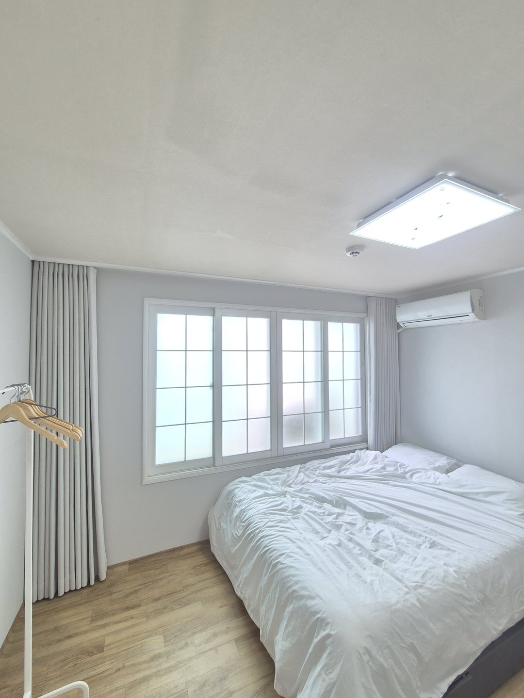
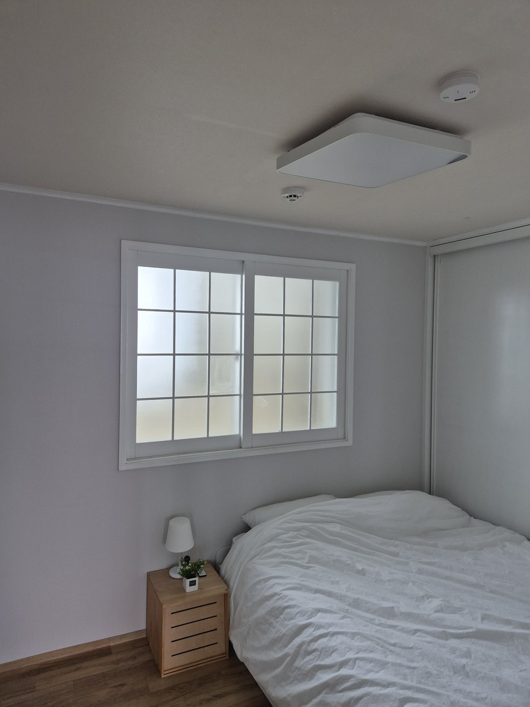

2026년 8월 11일 시공
경주 숙박용 아파트
방 네 곳 암막커튼 전체 시공후기

경주에 있는 아파트를 숙소로 쓰는 집입니다. 방이 네 개, 거실이 하나였습니다. 방마다 창 크기와 모양이 달랐고, 발코니로 이어지는 유리문이 있는 방도 있었습니다.
사장님이 상담 때 하신 말씀은 이랬습니다. "아침에 밝아서 일찍 깼다는 후기가 몇 번 있었어요."
숙소는 집보다 암막 기준이 높습니다
이 현장에서 제일 먼저 잡은 기준입니다.
내 집에서는 아침에 어디가 밝은지 몸이 압니다. 베개 방향을 바꾸거나 이불을 당기면 됩니다. 며칠 자면 적응합니다.
손님은 그날 밤이 처음입니다. 어느 쪽 창으로 해가 드는지 모르고, 커튼을 어디까지 당겨야 맞물리는지도 모릅니다. 새벽에 밝아져도 뭘 고쳐야 할지 모릅니다. 그래서 그냥 깹니다.
여행지에서는 늦잠이 목적인 경우가 많습니다. 그 아침 한 번이 후기에 남습니다. 집이라면 아쉬운 정도로 끝날 일이 숙소에서는 그렇지 않습니다.

빛은 원단이 아니라 틈으로 샙니다
암막을 달았는데 밝다는 말씀을 자주 듣습니다. 대부분 원단이 문제가 아니라 틈이 문제입니다.
틈은 세 군데에서 생깁니다. 위는 커튼 봉과 천장 사이입니다. 창으로 들어온 빛이 그 위로 넘어와 천장에 부딪혀 방 전체로 퍼집니다. 천장은 대개 흰색이라 반사가 잘 됩니다. 제일 크고 제일 자주 놓치는 자리입니다.
옆은 원단 폭을 창 크기에만 맞출 때입니다. 해가 낮게 들어오는 아침에 양쪽 벽으로 빛이 파고들어 세로로 밝은 선이 남습니다.
아래는 원단이 짧을 때입니다. 바닥에서 반사된 빛이 올라와 누워 있는 시야 아래쪽에 깔립니다.
그래서 이 집은 세 군데를 같이 잡았습니다. 천장에 레일을 달아 위를 없앴고, 창 크기가 아니라 벽 폭으로 뽑아 옆을 없앴고, 길이는 바닥에 살짝 닿는 정도로 잡았습니다. 완전히 끌리면 밟히고 먼지가 붙고, 살짝 뜨면 그 틈으로 빛이 올라옵니다. 그 사이를 맞추는 게 실측입니다.
다만 완전한 암실이 되는 것은 아닙니다.


창이 이미 반투명인 방도 있었습니다
방 몇 개는 격자 반투명 유리였습니다. 밖에서 안이 보이지 않는 상태라 사장님도 그 방은 덜 급할 줄 아셨습니다.
그런데 아침에는 밝습니다. 반투명 유리는 빛을 막는 게 아니라 흩뜨립니다. 맑은 유리는 볕이 드는 자리만 밝은데, 반투명 유리는 그 빛을 사방으로 퍼뜨려 창 전체가 하나의 밝은 면이 됩니다. 들어오는 빛의 총량은 크게 줄지 않고 밝게 보이는 면적만 넓어집니다.
가려진 것과 어두운 것은 다릅니다. 유리는 시선을 맡고 커튼은 빛의 양을 맡습니다.

방마다 제품을 다르게 간 이유
전부 같은 커튼으로 통일하지 않았습니다.
창이 낮고 폭이 좁은 방 하나는 화이트 암막 롤스크린으로 갔습니다. 그 방은 침대가 창에 붙어 있었습니다. 커튼 원단이 접히면 두께가 생겨서 헤드보드와 벽 사이에 자리를 못 잡습니다. 한쪽으로 몰리거나 눌려서 구겨집니다. 손님이 매일 새로 만지는 물건인데 그러면 안 됩니다. 롤스크린은 평평하게 내려와서 벽에 붙듯이 떨어집니다.
거실에는 화이트 쉬폰만 걸었습니다. 거실에서 자는 손님은 없습니다. 거실은 아침에 밝은 쪽이 낫고, 발코니로 나가는 문이라 여닫는 일도 잦습니다. 두꺼운 원단을 걸면 매번 걷어야 합니다.


제품은 나눴지만 색은 하나로
숙소는 사진이 상품입니다. 손님은 예약하기 전에 사진부터 봅니다.
방마다 커튼 색이 다르면 같은 집처럼 안 보입니다. 이 방과 저 방이 다른 숙소처럼 보이면 신뢰가 떨어집니다.
그래서 밝은 회색 계열로 전부 맞췄습니다. 벽지와 바닥 색에 묻히지 않으면서 튀지도 않습니다. 다만 조명 색에 따라 사진에서 다르게 보일 수 있습니다.
정리하면 제품은 창과 가구가 정하고, 색은 사진이 정합니다.

손님이 매일 만지는 물건입니다
숙소 커튼은 집 커튼보다 손을 많이 탑니다. 손님이 바뀔 때마다 새로 여닫고, 세게 당기는 분도 있습니다. 집에서 쓰는 등급 그대로 넣으면 러너부터 상합니다.
그래서 레일과 러너를 넉넉한 등급으로 잡았습니다. 조작도 단순하게 두었습니다. 손으로 잡아서 옆으로 미는 방식입니다. 줄이나 봉을 따로 쓰는 방식은 설명이 필요합니다. 처음 온 사람이 어둠 속에서 한 번에 알아야 하니, 숙소에는 설명이 필요 없는 쪽이 맞습니다.
레일은 창보다 좌우로 더 길게 뺐습니다. 걷으면 원단이 창 밖 벽면에 모여 창이 통째로 나옵니다. 체크인이 오후라 손님이 들어왔을 때 방이 밝아야 하기 때문입니다.

자주 묻는 질문
Q. 경주도 방문 시공 되나요?
됩니다. 경주, 포항, 영덕, 울진, 안동, 영주, 의성 일대는 따솜커튼블라인드 이실장(010-2825-7275)이 직접 방문해 실측하고 시공합니다.
Q. 숙소는 방마다 다른 제품을 써도 되나요?
됩니다. 창 모양과 침대 위치가 방마다 다르면 오히려 나눠야 합니다. 대신 색은 하나로 맞추시는 쪽을 권합니다.
Q. 천장 레일은 아무 집에나 달 수 있나요?
천장 상태를 봐야 합니다. 콘크리트면 앵커를 넣고, 석고보드면 보강을 합니다. 실측 때 같이 확인합니다.
Q. 커튼이 바닥에 닿으면 지저분해지지 않나요?
살짝 닿는 정도로 잡습니다. 완전히 끌리면 밟히고 먼지가 붙습니다. 바닥에서 뜨면 그 틈으로 빛이 올라옵니다.
Q. 반투명 유리인데도 커튼이 필요한가요?
필요합니다. 반투명 유리는 시선을 막지 빛의 양을 줄이지는 않습니다. 오히려 밝게 보이는 면적이 넓어집니다.
Q. 두 짝으로 나누면 가운데로 빛이 새지 않나요?
한쪽이 다른 쪽 위로 넉넉히 넘어오게 폭을 더 줍니다. 딱 맞대기만 하면 그 선으로 들어옵니다.
Q. 거실도 암막으로 하는 게 낫지 않나요?
거실에서 주무시는 구조라면 필요합니다. 아니라면 밝은 쪽이 사진도 잘 나오고 낮에 쓰기도 편합니다.
Q. 숙소용은 세탁이 자주 필요할까요?
손님이 자주 만지는 만큼 아랫단에 손자국이 생깁니다. 원단에 따라 방법이 달라 시공할 때 안내드립니다.
마무리
숙소 커튼은 사장님이 쓰는 물건이 아닙니다. 그날 처음 온 사람이 어둠 속에서 한 번 만지는 물건입니다.
그 한 번에 다음 날 아침이 정해지고, 그 아침이 후기에 남습니다.
객실이 여러 개인 호텔·모텔·펜션은 빛만이 아니라 소리도 같이 잡아야 하는 경우가 많습니다. → 호텔·모텔 객실 방음커튼 시공
비슷한 시공


비슷한 시공이 필요하신가요?
창 전체가 나오게 찍은 사진 한 장 주시면 방문 전에 견적을 알려드립니다.
숙소라면 방 개수와 각 방 창 사진을 같이 주시면 제품 구성까지 잡아드립니다.